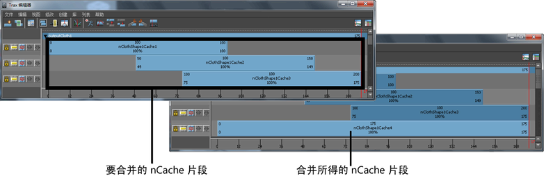
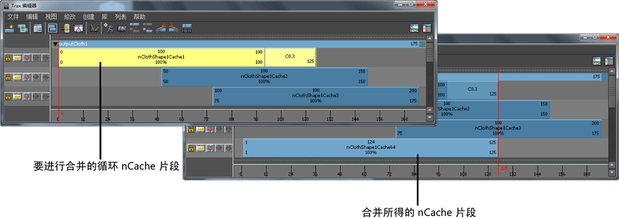
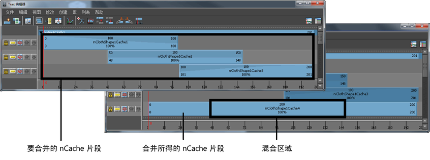

合并 nCache 片段
您可以将 nCache 片段合并到新的单个缓存片段中。要合并的缓存片段可以按顺序定位在一个轨迹中，也可以位于不同的轨迹上。您无法合并已禁用的 nCache 片段。
如果已选中或禁用位于合并时间范围的每个缓存片段，则只能合并 nCache 片段。例如，如果已有缓存片段 1（帧 1-100）、缓存片段 2（帧 50-150）和缓存片段 3（帧 100-200），并且要合并缓存片段 2 和 3，则必须禁用或选中缓存片段 1 以进行合并。
合并对象的所有缓存片段
您可以同时合并对象的所有缓存片段，进行合并操作时需选择对象而不是其 nCache 片段。合并时，会将对象已启用的所有缓存片段烘焙到单个缓存片段。
但是，如果有任何缓存片段重叠，或任何片段之间存在间距，请参见下面的合并多个非重叠 nCache 片段和合并多个重叠 nCache 片段。
合并对象的所有缓存片段
- 在场景视图中，选择要合并其缓存片段的对象。
- 在“Trax 编辑器”(Trax Editor)中，选择“列表 > 加载选定角色”(List > Load Selected Characters)。
所有当前对象的缓存都将在轨迹视图中显示为片段。
- 确保已启用对象的所有缓存片段。
- 在 FX 菜单集中，选择。

对象的所有已启用缓存根据“合并 nCache 选项”(Merge nCache Options)窗口中的当前设置合并，并创建新的 nCache 片段、缓存文件和描述文件。
合并的 nCache 片段已禁用，且不会覆盖或删除其磁盘上对应的缓存文件。
合并单个 nCache 片段
- 在场景视图中，选择要合并其缓存片段的对象。
您可以合并各个缩放、循环或保持的 nCache 片段。
- 在“Trax 编辑器”(Trax Editor)中，选择“列表 > 加载选定角色”(List > Load Selected Characters)。
当前对象的所有缓存在轨迹视图中均显示为片段。
- 启用要合并的 nCache 片段并禁用其他所有缓存片段。
- 在 FX 菜单集中，选择

单个缓存片段将根据“合并 nCaches 选项”(Merge nCaches Options)窗口中的设置合并，并创建新的 nCaches 片段、缓存文件和描述文件。
合并的 nCache 片段已禁用，且不会覆盖或删除其磁盘上关联的缓存文件。
合并多个非重叠 nCache 片段
您可以合并非重叠 nCache 片段。
但是，如果要合并的非重叠 nCache 片段之间有间距，则会对该间距进行线性插值，且不会将这些间距的缓存数据保存到合并的缓存片段。
例如，有三个要合并的缓存片段：缓存片段 1（帧 1-50）、缓存片段 2（帧 50-100）和缓存片段 3（帧 150-200）。合并这些缓存片段时，生成的合并缓存片段的长度为帧 1-200，但帧 101-149 不包含任何缓存数据。
合并多个非重叠 nCache 片段
- 在场景视图中，选择要合并其缓存片段的对象。
- 在“Trax 编辑器”(Trax Editor)中，选择“列表 > 加载选定角色”(List > Load Selected Characters)。
所有当前对象的缓存都将在轨迹视图中显示为片段。
- 启用要合并的非重叠 nCache 片段并禁用其他所有缓存片段。
- 选择要合并的非重叠缓存片段。
- 在 Trax 菜单栏中，选择“编辑 > 合并缓存片段”(Edit > Merge Cache Clips)。
所有选定的非重叠 nCaches 将根据“合并缓存片段选项”(Merge Cache Clip Options)窗口中的设置进行合并，并创建新的 nCache 片段、缓存文件和描述文件。请参见“Trax 编辑器”(Trax Editor)的“编辑”(Edit)菜单。
合并的 nCache 片段已禁用，且不会覆盖或删除其磁盘上关联的缓存文件。
合并多个重叠 nCache 片段
您可以合并多个重叠 nCache 片段。重叠的缓存片段区域将根据其“输入权重”(Input Weight)的当前设置及其任意权重贴图进行融合。
请参见融合 nCache 节点和 cacheBlend 节点。
合并多个重叠 nCache 片段
- 在场景视图中，选择要合并其缓存片段的对象。
- 在“Trax 编辑器”(Trax Editor)中，选择“列表 > 加载选定角色”(List > Load Selected Characters)。
所有当前对象的缓存都将在轨迹视图中显示为片段。
- 启用要合并的重叠 nCache 片段并禁用其他所有缓存片段。
- 选择要合并的重叠缓存片段。
- 在 Trax 菜单栏上，选择“编辑 > 合并缓存片段”(Edit > Merge Cache Clips)。

所有选定的重叠缓存片段将根据“合并缓存片段选项”(Merge Cache Clip Options)窗口中的设置进行合并，并创建新的 nCache 片段、缓存文件和描述文件。
合并的 nCache 已禁用，且不会覆盖或删除其磁盘上关联的缓存文件。
从属性编辑器中合并 nCache
您可以合并 nCache 以将其烘焙到单个缓存。要合并的缓存可按时间顺序或无序定位。
如果要合并的缓存在时间上重叠，则重叠的缓存区域将根据其“输入权重”(Input Weight)的当前设置及其任意权重贴图进行融合。
如果要合并的缓存没有重叠，但其之间有间距，则会对该间距进行线性插值，且不会将这些间距的缓存数据保存到合并的缓存。例如，有三个要合并的缓存：缓存 1（帧 15-25）、缓存 2（帧 25-35）和缓存 3（帧 40-50）。合并这些缓存时，生成的合并缓存的长度为帧 15-50，但帧 36-39 不包含任何缓存数据。
合并 nCache
- 选择要合并其缓存的对象。
- 在“属性编辑器”(Attribute Editor)中，启用要合并的缓存并禁用其他所有缓存。仅合并对象已启用的缓存。
- 在 FX 菜单集中，选择
 。
。
此时将显示“合并 nCache 选项”(Merge nCache Options)窗口。
- 设定合并选项，并单击“合并”(Merge)或“应用”(Apply)。
-
对象已启用的所有缓存将根据“合并 nCache 选项”(Merge nCache Options)窗口中的设置进行合并，并创建新的 nCache 属性编辑器选项卡、节点、缓存文件和 XML 描述文件。
合并的原始 nCache 已禁用，且不会覆盖或删除其磁盘上对应的缓存文件。